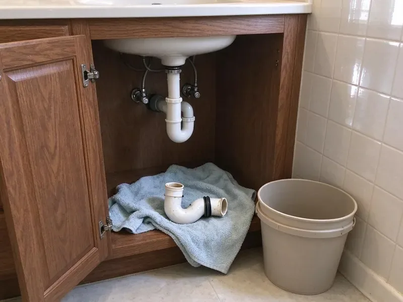

Copper Pipe Leak Repair in Huntsville, AL
Don't let a copper pipe leak disrupt your home in Huntsville, AL. BRV Plumbing offers prompt, professional service to fix it right.
- Fast Leak Detection
- Expert Copper Soldering
- Durable Pipe Repair
- Licensed Plumbers

Expert Copper Pipe Leak Repair Services in Huntsville, AL.
Contact BRV Plumbing now for a free estimate and reliable service.
Professional Copper Pipe Leak Repair in Huntsville, AL
BRV Plumbing specializes in diagnosing and repairing copper pipe leaks for homeowners across Huntsville, AL. From pinhole leaks to burst pipes, we use advanced tools and proven techniques to ensure a lasting repair, protecting your property from further water damage.
Our expertise includes:
- Accurate electronic leak detection for copper lines.
- Expert soldering and brazing for durable copper pipe repairs.
- Section replacement for severely damaged copper piping.

Additional Plumbing Repair Services in Huntsville, AL
We offer expert plumbing repair services across Huntsville, AL to stop leaks, clear blockages, and keep every fixture working the way it should.


Customers
Why Choose BRV Plumbing for Copper Pipe Leak Repair in Huntsville, AL?
Choosing BRV Plumbing means you're getting experienced professionals who understand the nuances of copper plumbing systems. We focus on delivering repairs that stand the test of time, minimizing future issues for your home.
- Local Knowledge, We understand how Alabama's soil conditions and water chemistry can affect copper pipes, leading to specific types of corrosion and leaks.
- Advanced Tools, Our technicians use non-invasive leak detection equipment to locate hidden copper pipe leaks without unnecessary damage to your property.
- Lasting Repairs, We don't just patch leaks; we provide comprehensive solutions that address the root cause, using high-quality materials for durable fixes.
Citywide Coverage
Whether you're in the heart of Huntsville or on its outskirts, our team is ready to respond quickly to your copper pipe leak emergency. We provide consistent, high-quality service across our entire service area.
Experienced Team
Each BRV Plumbing technician undergoes rigorous training, specializing in copper pipe repair techniques, including precise soldering and pipe fitting. You can trust their expertise to deliver a safe and effective repair for your home.
Safety-First Approach
Safety is our top priority for every copper pipe leak repair. We adhere strictly to all local Alabama plumbing codes and industry best practices to ensure your home's plumbing system is not only functional but also safe.
Trusted Certified Huntsville Plumbing Services Professionals
At BRV Plumbing, we take pride in providing certified plumbing services throughout Huntsville, AL. Backed by leading industry credentials, our experienced plumbers combine technical skill with genuine customer care. Whether it is repair, installation, or maintenance, we follow strict safety and quality standards to deliver long-lasting results you can trust.
Call Us Now PHCC Plumbing Contractor Recognition
PHCC Plumbing Contractor Recognition Better Business Bureau (BBB) Accreditation
Better Business Bureau (BBB) Accreditation Angi Certified Pro
Angi Certified Pro ISO 9001 Quality Management Certification
ISO 9001 Quality Management CertificationReliable Copper Pipe Leak Repair Services in Huntsville, AL
Pinhole Leak Repair in Huntsville
Pinhole leaks are common in older copper piping, often caused by corrosion from water chemistry or aggressive soil. We utilize precise leak detection to pinpoint these tiny leaks and offer durable soldering or section replacement to stop the drip. Addressing pinhole leaks quickly prevents them from escalating into larger, more damaging ruptures, which is crucial for maintaining your home's integrity in Huntsville.

Burst Copper Pipe Repair in Huntsville, AL
A burst copper pipe is a serious emergency, especially during Alabama's colder winter nights or from foundation shifts. Our emergency response team quickly isolates the water source, assesses the damage, and performs immediate repairs or section replacement. We use appropriate fittings and materials to ensure the new section of pipe can withstand typical household water pressure and prevent future bursts, adhering to Alabama plumbing standards.
Slab Leak Detection & Repair in Huntsville
Copper pipes often run under concrete slabs in Huntsville homes. A slab leak can be particularly challenging to detect due to the typical expansive clay soils found in Alabama, which can put stress on pipes. We employ acoustic and thermal imaging technology to locate these hidden leaks without invasive demolition. Once found, we offer direct access repair or re-routing options to fix the damaged copper section, minimizing disruption to your home.
Corrosion-Related Leak Repair in Huntsville, AL
Alabama's water, depending on the source, can sometimes be corrosive to copper pipes over time, leading to thinning walls and eventual leaks. We specialize in identifying corrosion patterns and repairing affected sections. Our plumbers can recommend solutions like water treatment or re-piping certain areas to prevent recurring corrosion issues, ensuring the longevity of your copper plumbing system throughout Alabama.
Underground Copper Pipe Leak Repair in Huntsville
Leaking underground copper pipes can lead to significant water loss and foundation issues, especially with the heavy rainfall common in Huntsville. We use trenchless repair methods where possible to fix or replace damaged underground copper lines, reducing the need for extensive excavation. This preserves your landscaping and minimizes the overall impact on your property.
Commercial Copper Pipe Leak Services in Huntsville, AL
Businesses in Huntsville rely on robust plumbing systems. A copper pipe leak in a commercial building can cause costly downtime and property damage. BRV Plumbing provides prompt and efficient commercial copper pipe leak repair services, understanding the need for minimal disruption to your operations. We work quickly to identify and fix leaks, ensuring your business can resume normal operations as soon as possible, in compliance with Alabama commercial codes.
Emergency Copper Pipe Leak Repair in Huntsville
Plumbing emergencies don't wait for business hours. If you have a sudden copper pipe leak in Huntsville, our emergency team is available to provide immediate assistance. We understand the urgency of stopping water damage and restoring your plumbing. Our technicians arrive quickly, equipped to handle urgent repairs and contain the situation effectively, day or night.

Preventative Copper Pipe Inspection in Huntsville, AL
Beyond repairs, BRV Plumbing offers preventative inspections for copper piping in Huntsville, AL homes. We can identify early signs of corrosion, stress, or potential weak points before they turn into costly leaks. This proactive approach helps extend the life of your plumbing system and can save you from unexpected emergency repairs down the line, especially important for homes with older copper infrastructure.
Copper Pipe Leak Repair Near Me in Huntsville, AL
When you search for "copper pipe leak repair near me" in Huntsville, AL, BRV Plumbing is your trusted local choice. Our team is strategically located to provide rapid response times to any plumbing emergency or scheduled service, ensuring your home is protected.
We understand the unique plumbing challenges faced by homeowners in Huntsville, AL. Our proximity allows us to deliver personalized service with a deep understanding of local building codes and environmental factors affecting your copper pipes.
BRV Plumbing at a Glance
- Licensed and insured plumbers serving Huntsville, AL
- Same-day appointments and 24/7 emergency response
- Clear written estimates, no hidden fees
- 4.8-star rated by 549+ Alabama customers
Huntsville Map
Huntsville Information
- Population
- 225,564
- Area codes
- 256/938/205
- Service area
- Huntsville and communities within 40 miles
- Nearby
- Madison, Athens, Decatur, Florence
For homes in Huntsville, AL, where varying soil conditions and occasional cold snaps can stress plumbing, prompt and professional copper pipe leak repair is essential to protect against costly water damage and maintain your property's value.
Expert Services
Trust our professionals for reliable BRV Plumbing solutions in Huntsville, AL.
Our Specialized Plumbing Services in Huntsville, AL
At BRV Plumbing, we provide a complete range of plumbing services across Huntsville, AL. From leak detection to full system installations, our team ensures fast, precise, and affordable service for both residential and commercial properties. Explore our core services below:


How Our Copper Pipe Leak Repair Process Works in Huntsville, AL
We follow a systematic approach to diagnose, repair, and verify every copper pipe leak, ensuring lasting results for your home.
Request a Quote
Contact us at (256) 391-9413 to describe your copper pipe leak. We'll schedule an inspection at your earliest convenience, providing clear communication from the start.
Thorough Inspection
Our expert plumbers use advanced leak detection equipment to accurately locate the source of the copper pipe leak, even if it's hidden behind walls or under floors.
Precise Repair
We implement the most effective repair strategy, whether it's a solder repair, section replacement, or re-routing, using high-quality materials and techniques to ensure durability.
Frequently Asked Questions About Copper Pipe Leak Repair in Huntsville
The cost of copper pipe leak repair in Huntsville can vary significantly depending on the leak's location, severity, and accessibility. Minor repairs, like a simple solder patch, might range from $200 to $500. More complex issues, such as a slab leak requiring specialized detection and repair, could range from $800 to $3000 or more. We provide a detailed estimate after our initial inspection.
While temporary fixes like clamps or epoxy putties exist, a professional plumber should handle copper pipe leaks. DIY repairs often fail, leading to larger leaks and more extensive water damage. Professionals have the tools and expertise to make a permanent, code-compliant repair.
Yes, BRV Plumbing stands behind the quality of our work. We offer a comprehensive warranty on all our copper pipe leak repairs, covering both labor and materials. Specific warranty details will be provided with your service agreement, giving you peace of mind.
We work with all standard types and brands of copper piping found in residential and commercial properties, including Type M, Type L, and Type K copper pipes. Our repairs use high-quality copper and fittings from reputable manufacturers like Mueller Streamline and Cerro Flow Products.
Copper pipes in Alabama can leak due to several factors, including corrosion from water chemistry (especially if the pH is too acidic or alkaline), aggressive soil conditions, high water pressure, poor installation, or physical damage from foundation shifts. Pinhole leaks often result from long-term internal corrosion.
Most standard copper pipe leak repairs, such as fixing a visible pinhole leak or replacing a small section, can be completed within 2 to 4 hours. More complex repairs, like those involving slab leaks or extensive re-piping, may take a full day or sometimes multiple days, depending on the scope of work.
Minor copper pipe leak repairs typically do not require a permit in Huntsville. However, if the repair involves significant re-piping, relocation of lines, or affects the main water service, a plumbing permit may be necessary. We will advise you if a permit is needed for your specific repair and handle the application process.
If you discover a copper pipe leak, the first step is to locate and shut off the main water supply to your home to prevent further water damage. Then, contact BRV Plumbing immediately at (256) 391-9413 for emergency service. Clear the area of any valuables and begin to collect any standing water.
What People Are Saying About Our Plumbing Experts?

Sofia M.
Two new toilets installed in one visit, no mess left behind, and the tech even adjusted a faucet he noticed was dripping. Fair pricing and really friendly.
Toilet Installation · Athens, AL
Emily R.
I called BRV Plumbing for plumbing repair, and the technician was fast, polite, and thorough. They explained the problem clearly and fixed it the same day. I will definitely hire them again. Highly recommended!
Plumbing Repair · Madison, AL
James P.
Our commercial plumbing system had a leak under the sink, and BRV Plumbing handled it professionally. The plumbers arrived quickly and restored everything without disruption to our customers.
Commercial Plumbing · Athens, AL
Mark T.
When our office needed drain cleaning, BRV Plumbing provided quick, reliable service. The plumber arrived on time and made sure every drain flowed perfectly before leaving. Very satisfied.
Drain Cleaning · Madison, ALLaura S.
I scheduled a water heater replacement, and the team made the process smooth and affordable. The new unit works perfectly, and they cleaned up after completing the job.
Water Heater Replacement · Gadsden, ALRobert G.
The trenchless sewer replacement saved our front yard. They walked us through the camera inspection footage first so we knew exactly what we were paying for.
Sewer Line Replacement · Huntsville, AL